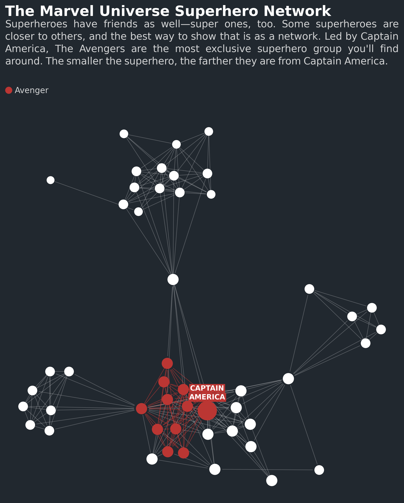

4. Graph¶
Graphs, or networks, show the structure of data through nodes and edges. Although they are very useful to show interconnections, matplotlib does not support them out of the box.
Multiplex’s graph visualization is built with the intent of making it easier to transform networks into stories.
The Graph class supports both undirected and directed networks, styling and legends.
Note
Multiplex’s Jupyter Notebook examples are a quick guide to get you up and running with creating network graph visualizations. Check out the network graph Jupyter Notebook tutorial to learn how to create the above visualization, or to start creating your own network graph visualizations.
Multiplex’s graph visualizations use the popular networkx library. If you already use networkx, you can visualize networks in a handful of lines:
import matplotlib.pyplot as plt
import networkx as nx
from multiplex import drawable
viz = drawable.Drawable(plt.figure(figsize=(10, 10)))
G = nx.path_graph(5)
viz.draw_graph(G, edge_style={ 'color': 'C1' },
node_style={ 'color': 'C4', 'edgecolor': 'C1', 'linewidth': 2, 's': 250 })
viz.show()
Although Multiplex requires only the graph, you can style the nodes and the edges using the node_style and edge_style parameters.
Multiplex supports both undirected and directed edges. Moreover, the library also supports self-connections, or edges from a node to itself.
Apart from drawing nodes and edges, Multiplex is also capable of drawing names next to nodes and edges. These can be used, for instance, to write node names or describe the types of relations between nodes.
Finally, Multiplex’s graphs also support legend labels for both nodes and edges.
Warning
The graph visualization uses the networkx package to generate the layout of the graph. Therefore it is a prerequisite to have it installed before creating these visualizations.
-
class
graph.graph.Graph(*args, **kwargs)¶ The
Graphclass is a general network graph that plots nodes and creates edges between them. Like all visualizations, it stores aDrawableinstance and revolves around thedraw()function.The
Graphclass builds on theLabelledVisualization. The reason why theGraphbuilds on that, and not the simplerVisualization, is that it uses theLabelledVisualization’s labels for node names. In this way, theGraphautomatically ensures that the node names do not overlap.-
__init__(*args, **kwargs)¶ Initialize the graph.
-
draw(G, positions=None, node_style=None, name_style=None, edge_style=None, label_style=None, *args, **kwargs)¶ Draw the given networkx graph on the
Drawable.The method expects only a graph. Differently from other visualizations, the styling options are passed on as
dictarguments.By default, this method generates the node positions using the networkx.spring_layout function. The
argsandkwargsare passed on to this function to control how the graph looks. However, you can provide your own node positions in thepositionsargument.To draw the graph, the
Graphdraws three types of components:- Nodes using matplotlib’s scatter function,
- Undirected edges using matplotlib’s plot function and directed edges using matplotlib’s annotate function, and
- Node and edge names using
Annotation.
The
Graphautomatically draws names next to nodes and edges whenever it finds anameattribute. You can set the name directly on the node or edge in the graph:G.nodes['u']['name'] = 'node' G.edges[('u', 'v')]['name'] = 'edge'
Similarly, the
Graphadds a legend for nodes and edges whenever it finds alabelattribute. You can set the label directly on the node or edge in the graph:G.nodes['u']['label'] = 'node' G.edges[('u', 'v')]['label'] = 'edge'
Parameters: - G (
networkx.classes.graph.Graph) – The networkx graph to draw. The function automatically detects whether the graph is undirected or directed and draws the edges accordingly. - positions (dict) –
The node’s initial positions. If you provide no positions, the function uses the networkx.spring_layout function to find the best position for nodes. If you provide a position for a subset of the nodes, the rest of the positions are generated automatically.
You can provide the positions with node names as keys and their positions as values. Positions must be tuples: the x and y coordinates.
- node_style (dict) –
- The general style for nodes.
- The
node_styleaccepts any styling option supported by matplotlib’s scatter function.
You can override the general style of the nodes by giving them a
styleattribute:G.nodes['u']['style'] = { 'color': '#BB3633' }
Note
You can set the size of nodes by setting the
skey in thenode_style. By default, the size is 100. - name_style (dict) –
- The general style for names.
- The
name_styleaccepts any styling option supported by theAnnotation’sdraw()function.
You can override the general style of the names by giving nodes and edges a
name_styleattribute:G.nodes['u']['name_style'] = { 'fontweight': 'bold' } G.edges[('u', 'v')]['name_style'] = { 'fontweight': 'bold' }
- edge_style (dict) –
- The general style for edges.
- The
edge_styleaccepts any styling option supported by matplotlib’s plot and annotate functions.
You can override the general style of the edges by giving them a
styleattribute:G.edges[('u', 'v')]['style'] = { 'color': '#BB3633' }
- label_style (dict or None) – The general style for labels.
The
label_styleaccepts any styling option supported by theAnnotation’sdraw()function.
Returns: A tuple containing the drawn components:
- A list of drawn nodes as
matplotlib.collections.PathCollectioninstances, - A list of rendered node names as
Annotationinstances, - A list of edges as
matplotlib.lines.Line2Dinstances if the graph is undirected or asmatplotlib.text.Annotationif the graph is directed, and - A list of rendered edge names as
Annotationinstances.
Return type: tuple
-